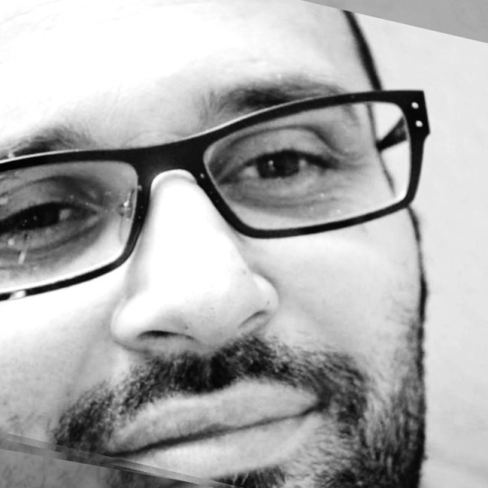

|

|
Dukagjin Murtezani
Specialized Worker for WEB Column Arrangement and Journalism at Makedonski Telekom AD
Contact Me...
| # |
Name |
Mobile |
Linkedin |
| 1 |
Dukagjin |
+38971488988 |
https://www.linkedin.com/in/dukagjin-murtezani-16a4417a/ |
|
SUMMARY
With 16-years experience in Deutsche Telekom in Macedonia as a Specialized Worker in WEB Column Arrangement and Journalism.
Including skills such as Front-end Developer(HTML, CSS, JavaScript, Bootstrap 4, github, Wordpress, UX/UI, Illustrator, Photoshop, Canva, Figma, Sketch, Adobe XD etc.
Verbal and written communication in 5 languages.
PROFESSIONAL EXPERIENCE
T-home(telekom) - Skopje, Macedonia
Content Office / Nov2007 - Onwards Journalism, (CMS) Administration
Responsibility
Fully responsible for uploading & updating information in Deutsche Telekom Macedonia website > www.idividi.com.mk
Achievements
Certificates...
| # |
Certificates |
Spercializatons |
Date |
| 1 |
Introduction to HTML5 |
Coursera |
Oct 11, 2020 |
| 2 |
Code Yourself! An Introduction to Programming
|
Coursera |
Oct 8, 2020 |
| 3 |
Front-End Web UI Frameworks and Tools:
Bootstrap 4 |
Coursera |
J an 6, 2022 |
| 4 |
Introduction to CSS3 |
Coursera |
Dec 14, 2020 |
IDIVIDI website of the Year 2011/12 Super brands Award
Meta Social Media Marketing(specialization)
Google IT Support(specialization)
Code Yourself! An Introduction to Programming
Introduction to HTML5
Introduction to CSS3
Interactivity with JavaScript
Front-End Web UI Frameworks and Tools: Bootstrap 4(specialization)
Figma for UI/UX: Master Web Design in Figma
One & Only Mobile App UIUX Design Masterclass with Figma
Verbal and written communication in 5 languages.
PROFESSIONAL EXPERIENCE
Deutche Telekom - Skopje, Macedonia
Content Office / Nov2007 - Onwards Journalist, Digital Marketing, Website (CMS) Administration
EARLY CAREER BACKGROUND
Web Designe and Graphic Designe at: http://arberiadesign.com.mk/en/
Freelancer at: https://blackrock-websolutions.de/(Wordpress)
My early work that i have participate:
ossa.mk
www.coffeeshopcompany.mk
www.jehonamuzik.com
hoteldinamika.com
www.indeks.mk
www.isshs.edu.mk
www.mzi.mk
www.ads-malerei.ch
www.lax-cafe.com
www.mebeldizajn.com
www.oda.mk
etc.mk
EDUCATION, TRAINING
SOUTH EAST EUROPEAN UNIVERSITY _ TETOVO, 18.09.2007
Graduated at the Faculty of Communication Sciences and Technologies
branch of Communication Sciences at the 'SEEU University'
BACHELOR OF COMMUNICATION SCIENCES
Art and Graphic Design in 'UNIVERSITY OF TETOVA', 2000 - 2002
LANGUAGES
Academic fluency in writing and speaking in Albanian and fluent in writing and speaking in English and Macedonian.